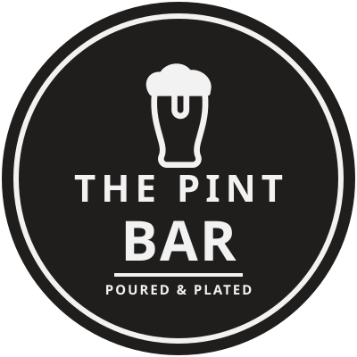
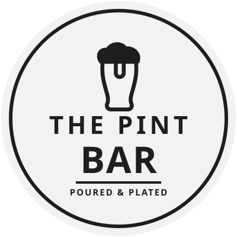
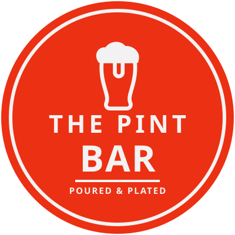
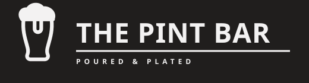
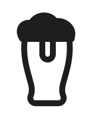
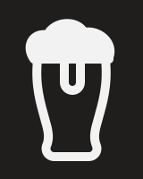
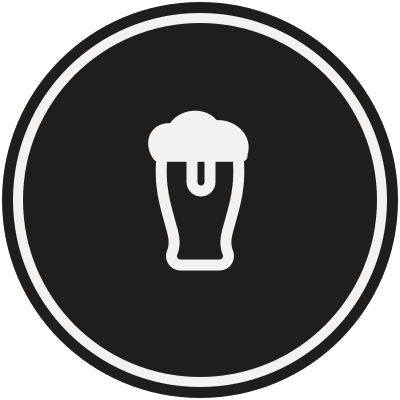
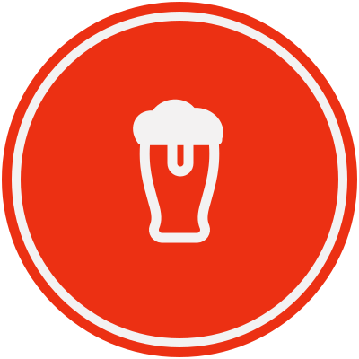

Badge — primary
Dark disc, ground artwork. Signage, avatars, stamps.
Download SVG

Badge — reversed
Ink on ground. Menus, print, stationery.
Download SVG

Badge — accent
Red field. One hero application only.
Download SVG
Horizontal lockup
Website header, email signature, footers.
Download SVG

Horizontal — reversed
Dark headers and video lower-thirds.
Download SVG

Glass icon
App icon, favicon, embroidery, glassware etch.
Download SVG

Glass icon — reversed
On ink grounds and photography.
Download SVG

Avatar — ringed
Social profile, 40px and up.
Download SVG

Avatar — accent
Alternate social profile.
Download SVG
Ink
#201E1D
#EC3013
#F3F2F2
One ink at a time. Red is reserved for a single hero application per surface.
Type
Big Shoulders Display (800/900) sets the wordmark; Archivo 600, tracked wide, carries the strapline and all supporting type. The SVGs reference these as live fonts — convert text to outlines before sending to a signmaker, embroiderer or printer.
Clear space & scale
Keep clear space equal to the height of the foam head on all four sides. Badge minimum 40px; glass icon holds down to 20px. Never recolour, stretch, outline or add effects to the artwork.